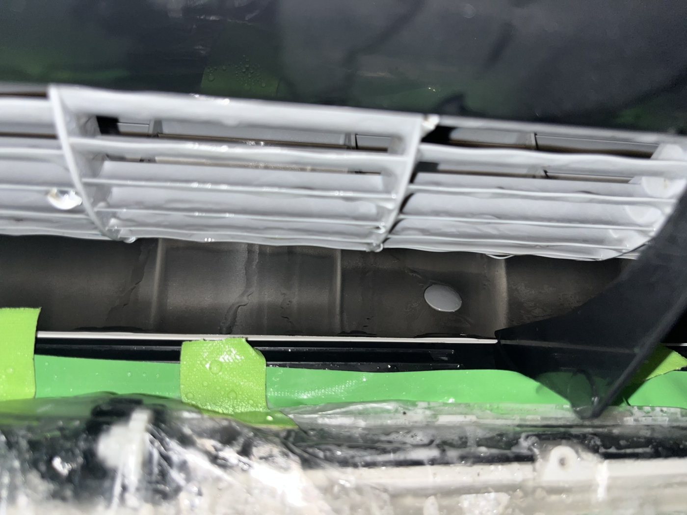

3倍。生まれたばかりの体は、大人の3倍の速さで空気を出し入れしています。
そして、その体は1日のほとんどを眠って過ごします。日本睡眠学会の資料では、生後1か月以内の新生児は1日のうち16〜17時間。1分に40〜60回の息を、1日16〜17時間、同じ部屋で。だから私は、赤ちゃんの部屋の空気が「どこを通ってくるか」を気にします。出典 日本睡眠学会「睡眠の発達」
その空気を、東京都はどの高さで測るか。子どもの部屋の空気を測るときの決まりがあります。
「同じ部屋でも高さによって濃度が違うことも考えられます｡ 3才児(身長100cm)なら60cm､赤ちゃんなら30cmのように子供の生活空間を目安に採取位置を検討しましょう｡」出典 東京都「化学物質の子供ガイドライン（室内空気編）」
赤ちゃんの空気は、床から30cm。大人が立って吸っている空気とは、別の空気です。
東京都が、カビの住みかとして
名指しした場所
浴室のカビは、誰でも知っています。東京都の資料が代表的なカビの住みかとして挙げているのは、そこだけではありません。
「クロカビ（クラドスポリウム）黒い斑点状のカビ。住宅のいたるところに生え、アレルギーの原因にもなる。浴室やトイレの壁・タイル目地、エアコン・加湿器・洗濯機の内部」出典 東京都「健康・快適居住環境の指針」指針No.9 室内のカビ対策
エアコンの内部。洗濯機の内部。
どちらも、ふだん目に入りません。
家のカビと子どもの体の関係は、環境省の追跡調査（エコチル調査）が3歳児6万人で調べています。家庭でカビが発生した子どもは、そうでない子どもに比べて、喘鳴の起こりやすさが1.13倍。大きな数字ではありません。6万人で見て残った差です。出典 環境省 エコチル調査 論文概要「3歳児の喘鳴と住環境」（Indoor Air 2021）
ここで、書いている私のことを。
ワンヒッター株式会社の代表、佐々木沙樹です。江戸川区で、エアコンや浴室や洗濯機を分解して洗う会社をやっています。3歳の息子がいます。
私は、間に合いませんでした。息子が生まれたあとに、この読み物に書いたことを知って、急いでプロに洗ってもらいました。だから、生まれる前に、と書いています。
ここから先は資料ではなく、うちの現場で撮った写真です。頼むかどうかは、読み終わってから決めてください。
フィルターの奥で、
見てきたもの
「フィルターはこまめに洗っています」。そう言われたお宅のエアコンの、吹き出し口です。黒い点が並んでいました。

フィルターは入口の網です。そこを洗っても、奥の熱交換器と、風を送るファンには手が届かない。同じエアコンの、フィルターを外した奥。

この黒いのが、風の通り道に張り付いたまま、風を送っていました。分解して洗うと、こうなります。

1台分。洗う前、これはエアコンの中に貼り付いていたものです。

洗濯機も同じ構造です。洗濯物を入れる槽の外側に、もう1つ槽がある。あいだの隙間は外から見えません。黒いカスが洗濯物に付くようになったら、その隙間の話です。
自分でできること、
できないこと
私に頼まなくていいことから。
エアコンのフィルターを水で洗う
電源を切って外し、ぬるま湯で洗い、陰干し。洗剤は要りません。東京都アレルギー情報navi.の目安は、年に3〜4回。
洗濯機の「槽洗浄」コースを回す
パナソニックの案内では、月に1回程度。塩素系の漂白剤で。
やらないでほしい：洗浄スプレーをエアコンの中に吹く
私の意見ではなく、メーカーの言葉です。
「市販の洗浄スプレーは、ご使用しないでください。」出典 ダイキン「エアコンのお手入れについて（ルームエアコン）」
熱交換器、送風ファン、洗濯槽の外側。ここは分解しないと洗えない。ここだけが、私たちの仕事です。
いつやるか
生まれてからだと、頼みにくくなります。分解した部品を並べて洗う2〜3時間を、赤ちゃんと一緒に家で待つことになる。迎える1〜2か月前、家に人が増える前が、いちばん静かに済みます。
急がなくていい見分け方を1つ。エアコンの電源を切り、吹き出し口の羽根を手で下に向けて、スマホのライトで奥を照らしてください。黒い点や綿ぼこりが見えたら、中も同じ。何も見えなければ、今は急がなくていい。
書きたかったことは、ここまでです。
読んでくださって、ありがとうございました。
頼むなら
赤ちゃんを迎える前の、エアコン1台と浴室。分解して、部品ごとに洗います。
出張費・駐車場代・追加作業費はありません。お掃除機能付きのエアコンは 17,380円。5〜7月と12月は繁忙期の加算 3,300円。作業のあと、洗った水をそのままお見せします。
日程を見て予約するご利用後のアンケートで「他の人にすすめたい」 98.6%（2023年1月〜2025年12月・209名中206名）。Googleのクチコミ ★5.0（24件・2026年9月時点）。東京都・千葉県・神奈川県。
エアコンは、上の見分け方で自分で見られます。自分では見られないのが、洗濯槽の裏側と追い焚き配管です。そこだけ、こちらが見に行きます。内視鏡カメラと測定器で、その場で一緒に見て、汚れていなければ「今回は不要」と言います。閑散期だけ。
無料点検を申し込む（洗濯槽・追い焚き配管、10分）- MSDマニュアル プロフェッショナル版「新生児の身体診察」
https://www.msdmanuals.com/ja-jp/professional/19-小児科/新生児および乳児のケア/新生児の身体診察 - 宮崎大学 医学部附属病院「バイタルサインの基準値」
https://www.miyazaki-u.ac.jp/tsunomaru/kenkounikki/kijyunchi/ - 日本睡眠学会「睡眠の発達」
https://www.jssr.jp/basicofsleep5 - 東京都「化学物質の子供ガイドライン（室内空気編）」
https://www.hokeniryo.metro.tokyo.lg.jp/kankyo/kankyo_eisei/jukankyo/indoor/indoorindex/indoorairguideline - 東京都「健康・快適居住環境の指針」指針No.9 室内のカビ対策
https://www.hokeniryo.metro.tokyo.lg.jp/documents/d/hokeniryo/web_bunya3 - 環境省 エコチル調査 論文概要「3歳児の喘鳴と住環境」（Indoor Air 2021）
https://www.env.go.jp/chemi/ceh/results/material/main_224.pdf - 東京都アレルギー情報navi.「室内環境対策」
https://www.hokeniryo1.metro.tokyo.lg.jp/allergy/measure/indoor.html - パナソニック FAQ「槽洗浄の頻度」
https://jpn.faq.panasonic.com/app/answers/detail/a_id/54 - ダイキン「エアコンのお手入れについて（ルームエアコン）」
https://www.daikincc.com/faq/customer/web/knowledge2700.html
引用は原文のままです。写真はすべて当社が施工した現場で撮ったもので、合成も加工もしていません。お宅が分かる写真は使っていません。
この読み物を書いたのは ワンヒッター株式会社（〒134-0081 東京都江戸川区北葛西5-14-11・080-8043-8259）です。カードを置いてくださった施設には、ご利用があった場合に紹介料をお支払いすることがあります（医療法人など、受け取れない施設を除く）。お客様の料金には上乗せしません。
運営者情報 個人情報の取扱い